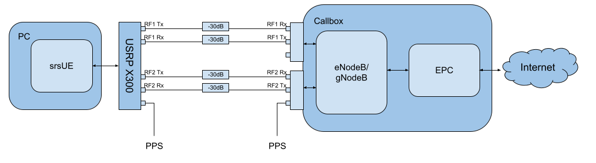

5G NSA srsUE
简介
srsRAN 4G 21.04 版本为 srsUE 带来了 5G NSA（非独立）支持。 本应用笔记介绍了如何将 UE 与第三方 5G NSA 网络结合使用。在这个例子中， 我们使用 Amarisoft 的 Amari Callbox Classic 来提供网络。
5G NSA：您需要了解的内容

5G NSA 模式 3
5G 非独立模式通过构建并使用预先存在的 4G 基础设施来提供 5G 支持。 除了主 4G 载波外，还提供了辅助 5G 载波。首先连接 5G NSA UE 先连接到 4G 运营商，然后再连接到辅助 5G 运营商。使用4G锚定载波 用于控制平面信令，而 5G 载波用于高速数据平面流量。
迄今为止，这种方法已用于大多数商业 5G 网络部署。它提供 提高数据速率，同时利用现有的 4G 基础设施。 UE 必须支持 5G NSA 才能利用 5G NSA 服务，但现有 4G 设备不会中断。
局限性
当前的 5G NSA UE 应用程序有一些功能限制，需要某些配置 gNB 和核心网络的设置。主要功能限制如下：
4G 和 NR 载波需要使用相同的子载波间隔（即 15 kHz）和带宽（我们测试了 10 和 20 MHz）
仅支持 DCI 格式 0_0（用于上行链路）和 1_0（用于下行链路）
NR运营商需要使用RLC UM（尚不支持NR RLC AM）
支持 sub-6Ghz (FR1) 频谱
硬件要求
本应用笔记使用了以下组件：
Amari Callbox 支持 5G NSA 作为 eNB/gNB 和核心
AMD Ryzen5 3600X Linux PC 作为 UE 计算平台
Ettus Research USRP X310 通过 10GigE 连接作为 UE RF 前端
Amari Callbox 是 Amarisoft 推出的基于 LTE/NR SDR 的 UE 测试解决方案。 它包含一个 EPC/5GC、一个 eNodeB、一个 gNodeB、一个 IMS 服务器、一个 eMBMS 服务器和带有 PCIe SDR 卡的 Intel i7 Linux PC。 gNodeB 符合版本 15，并且 支持 NSA 和 SA 模式。规格的进一步概述可以在 数据表。 选择该测试解决方案是因为它广泛可用、易于配置且用户友好。
硬件设置

测试可以通过无线方式或使用有线设置进行。 在此示例中，我们在 UE 和 eNB/gNB 之间使用电缆设置（即从 X310 到 PCIe SDR 卡） 在呼叫箱上）。这些连接通过 30dB 衰减器，如上图所示。的 还显示了用于 UE 和 Callbox 精确时钟的 PPS 输入。 UE 和 Callbox 都需要精确的时钟 - 在我们的测试中，我们为两者提供 PPS 输入。
配置
要设置和运行 5G NSA 网络和 UE，两个网络的配置文件 Callbox 和 srsUE 必须更改。
所有修改的配置文件已作为本应用说明的附件包含在内。它是 建议您使用这些文件以避免手动更改配置时出现错误。任意配置 此处未包含的文件不需要对默认设置进行修改。
UE 文件：
呼叫箱文件：
srsUE
需要对 UE 配置文件进行以下更改以允许其连接 NSA 模式下的 Callbox。
首先需要更改以下参数 [射频] 选项，以便 X310优化配置：
[rf]
tx_gain = 10
nof_antennas = 1
device_name = uhd
device_args = type=x300,clock=external,sampling_rate=11.52e6,lo_freq_offset_hz=11.52e6
srate = 11.52e6
需要进行下一组更改[大鼠.eutra] 选项。这确保 锚单元由 UE 找到：
[rat.eutra]
dl_earfcn = 300
最后 [大鼠.nr] 5G NSA 模式操作需要配置选项：
[rat.nr]
#enable 5G data link
nof_carriers = 1
电话亭
要正确配置 Callbox，必须对以下文件进行更改： mme.cfg 和 gnb_nsa.cfg.
移动管理实体配置
的 mme.cfg 必须更改文件以反映 QoS 类标识符 (QCI)，该标识符将 通过网络使用。我们使用 QCI 7，因为 UE 支持 NR RLC UM。 必须对以下内容进行更改 时代： 配置：
qci: 7,
gNB NSA 配置
gnb_nsa.cfg 负责配置 LTE 和 NR 单元所需的 NSA 模式。 LTE单元将主要用于控制平面， 而 NR 单元将用于数据平面。
DL 中使用的资源块 (RB) 数量和天线数量必须首先确定 修改：
#define N_RB_DL 50 // Values: 6 (1.4MHz), 25 (5MHz), 50 (10MHz), 75 (15MHz), 100 (20MHz)
#define N_ANTENNA_DL 1 // Values: 1 (SISO), 2 (MIMO 2x2), 4 (MIMO 4x4)
还应设置 NR 小区带宽：
#define NR_BANDWIDTH 10 // NR cell bandwidth. With the PCIe SDR50 board, up to 50 MHz is supported.
每个小区的 TX 增益、采样率以及 NR 小区的 UL 和 DL 频率必须 被设置。 tx_gain 设置为 射频驱动程序：:
tx_gain: 70.0, /* TX gain (in dB) */
LTE 单元的采样率设置为 射频端口： 配置：
/* RF port for the LTE cell */
sample_rate: 11.52,
为 NR 小区设置采样率和 DL/UL 频率 射频端口： 配置：
/* RF port for the NR cell */
sample_rate: 23.04,
dl_freq: 3507.84, // Moves NR DL LO frequency -5.76 MHz
ul_freq: 3507.84, // Moves NR UL LO frequency -5.76 MHz
DL的NR绝对射频信道号（ARFCN）需要更改 以匹配已设置的新 DL 频率：
dl_nr_arfcn: 634240, /* 3507.84 MHz */
接下来，必须调整 NR 单元的默认设置。子载波间隔应 被改变在 nr_cell_默认值： 配置：
subcarrier_spacing: 15, /* kHz *
ssb_subcarrier_spacing: 30,
定时偏移应设置为 0：
n_timing_advance_offset: 0,
现在需要调整 TDD 配置选项：
period: 10,
dl_slots: 6,
dl_symbols: 0,
ul_slots: 3,
ul_symbols: 0,
此后需要调整PRACH配置：
#if NR_TDD == 1
prach_config_index: 0,
msg1_frequency_start: 1,
zero_correlation_zone_config: 0,
ra_response_window: 10, /* in slots */
对于 PDCCH 配置（从第 411 行开始），必须进行以下更改：
pdcch: {
common_coreset: {
rb_start: -1, /* -1 to have the maximum bandwidth */
l_crb: -1, /* -1 means all the bandwidth */
duration: 1,
precoder_granularity: "sameAsREG_bundle",
//dmrs_scid: 0,
},
dedicated_coreset: {
rb_start: -1, /* -1 to have the maximum bandwidth */
l_crb: -1, /* -1 means all the bandwidth */
duration: 1,
precoder_granularity: "sameAsREG_bundle",
//dmrs_scid: 0,
},
css: {
n_candidates: [ 1, 1, 1, 0, 0 ],
},
rar_al_index: 2,
uss: {
n_candidates: [ 0, 2, 1, 0, 0 ],
dci_0_1_and_1_1: false,
force_dci_0_0: true, // Forces DCI format 0_0 for Uplink
force_dci_1_0: true, // Forces DCI format 1_0 for Downlink
},
al_index: 1,
},
对于 PDSCH 配置，需要进行以下更改：
k1: [ 8, 7, 6, 6, 5, 4],
调制编码方案 (MCS) 表必须选择 QAM 64：
mcs_table: “qam64”,
在PUCCH设置中需要关闭跳频：
freq_hopping: false,
对于普奇2 输入时，可以选择以下设置，同时 的条目 普奇3 和 普奇4 可以完全删除：
pucch2: {
n_symb: 2,
n_prb: 1,
freq_hopping: false,
simultaneous_harq_ack_csi: false,
max_code_rate: 0.25,
},
配置文件的最终更改是对 pusch 设置进行的：
pusch: {
mapping_type: "typeA",
n_symb: 14,
dmrs_add_pos: 1,
dmrs_type: 1,
dmrs_max_len: 1,
tf_precoding: false,
mcs_table: "qam64", /* without transform precoding */
mcs_table_tp: "qam64", /* with transform precoding */
ldpc_max_its: 5,
k2: 4, /* delay in slots from DCI to PUSCH */
p0_nominal_with_grant: -90,
msg3_k2: 5,
msg3_mcs: 4,
msg3_delta_power: 0, /* in dB */
beta_offset_ack_index: 9,
/* hardcoded scheduling parameters */
n_dmrs_cdm_groups: 1,
n_layer: 1,
/* if defined, force the PUSCH MCS for all UEs. Otherwise it is
computed from the last received PUSCH. */
/* mcs: 16, */
},
现在应该正确配置 Callbox，以便使用 srsUE 进行 5G NSA 测试。
用途
配置完成后，我们就可以运行UE和Callbox了。应按以下顺序 运行网络时使用：
微机电系统
eNB/gNB
UE
微机电系统
要运行 MME，请使用以下命令：
sudo ltemme mme.cfg
eNB/gNB
接下来应使用以下命令实例化 eNB/gNB：
sudo lteenb gnb-nsa.cfg
控制台输出应类似如下：
LTE Base Station version 2021-03-15, Copyright (C) 2012-2021 Amarisoft
This software is licensed to Software Radio Systems (SRS).
Support and software update available until 2021-10-29.
RF0: sample_rate=11.520 MHz dl_freq=2140.000 MHz ul_freq=1950.000 MHz (band 1) dl_ant=1 ul_ant=1
RF1: sample_rate=23.040 MHz dl_freq=3507.840 MHz ul_freq=3507.840 MHz (band n78) dl_ant=1 ul_ant=1
UE
要运行 UE，请使用以下命令：
sudo srsue ue.conf
UE 初始化后，您应该看到以下内容：
Opening 2 channels in RF device=uhd with args=type=x300,clock=external,sampling_rate=11.52e6,lo_freq_offset_hz=11.52e6,None
接下来是有关 USRP 的一些信息。成功找到单元格后，您应该看到以下内容：
Found Cell: Mode=FDD, PCI=1, PRB=50, Ports=1, CFO=0.1 KHz
Found PLMN: Id=00101, TAC=7
Random Access Transmission: seq=17, tti=8494, ra-rnti=0x5
RRC Connected
Random Access Complete. c-rnti=0x3d, ta=3
Network attach successful. IP: 192.168.4.2
Amarisoft Network (Amarisoft) 20/4/2021 23:32:40 TZ:105
RRC NR reconfiguration successful.
Random Access Transmission: prach_occasion=0, preamble_index=0, ra-rnti=0x7f, tti=8979
Random Access Complete. c-rnti=0x4601, ta=23
---------Signal----------|-----------------DL-----------------|-----------UL-----------
rat pci rsrp pl cfo | mcs snr iter brate bler ta_us | mcs buff brate bler
lte 1 -52 13 12 | 19 40 0.5 15k 0% 7.3 | 16 0.0 10k 4%
nr 500 4 0 881m | 2 31 1.0 0.0 0% 0.0 | 17 0.0 6.0k 0%
lte 1 -49 7 -4.8 | 28 40 0.5 1.4k 0% 7.3 | 0 0.0 0.0 0%
nr 500 3 0 -5.9 | 27 35 1.0 1.3k 0% 0.0 | 28 0.0 148k 0%
lte 1 -58 16 -3.7 | 28 40 0.5 1.4k 0% 7.3 | 0 0.0 0.0 0%
nr 500 3 0 -7.7 | 27 35 1.0 1.3k 0% 0.0 | 28 0.0 148k 0%
lte 1 -61 19 428m | 28 40 0.5 1.4k 0% 7.3 | 0 0.0 0.0 0%
nr 500 4 0 2.2 | 27 30 1.4 67k 0% 0.0 | 28 28 143k 0%
lte 1 -61 19 -507m | 28 40 0.5 1.4k 0% 7.3 | 0 0.0 0.0 0%
nr 500 4 0 924m | 27 24 1.9 18M 0% 0.0 | 28 0.0 3.7k 0%
lte 1 -61 19 3.8 | 28 40 0.5 1.4k 0% 7.3 | 0 0.0 0.0 0%
nr 500 4 0 3.5 | 27 24 1.9 18M 0% 0.0 | 0 0.0 0.0 0%
lte 1 -61 19 3.8 | 28 40 0.5 1.4k 0% 7.3 | 0 0.0 0.0 0%
nr 500 4 0 3.1 | 27 24 1.9 18M 0% 0.0 | 0 0.0 0.0 0%
要确认 UE 已成功连接，您应该在控制台输出中看到以下内容 基站:
PRACH: cell=00 seq=17 ta=3 snr=28.3 dB
PRACH: cell=02 seq=0 ta=23 snr=28.3 dB
----DL----------------------- --UL------------------------------------------------
UE_ID CL RNTI C cqi ri mcs retx txok brate snr puc1 mcs rxko rxok brate #its phr pl ta
1 000 003d 1 15 1 15.0 0 16 5.58k 15.4 34.7 18.8 3 13 5.27k 1/3.7/6 31 38 0.0
3 002 4601 1 15 1 27.0 0 1 320 36.2 - 27.7 0 87 64.0k 1/2.1/4 - - -0.3
1 000 003d 1 15 1 28.0 0 4 1.42k 16.2 34.8 20.0 1 1 420 1/3.5/6 31 38 0.0
3 002 4601 1 15 1 27.0 0 4 1.28k 28.1 - 28.0 0 200 148k 2/2.1/3 - - -0.3
1 000 003d 1 15 1 28.0 0 4 1.42k 16.1 34.8 - 0 0 0 - 31 38 0.0
3 002 4601 1 15 1 27.9 0 1037 16.8M 29.9 - 27.9 1 21 16.1k 1/2.3/5 - - -0.3
1 000 003d 1 15 1 28.0 0 4 1.42k 16.3 35.2 - 0 0 0 - 31 38 0.0
3 002 4601 1 15 1 27.9 5 1120 18.3M 29.9 - - 0 0 0 - - - -
1 000 003d 1 15 1 28.0 0 4 1.42k 16.0 34.8 - 0 0 0 - 31 38 0.0
3 002 4601 1 15 1 27.9 0 1125 18.4M 29.9 - - 0 0 0 - - - -
srsGUI 支持

srsGUI 还支持在 NSA 模式下与 UE 一起使用。上面可以看到生成的图的示例。
要启用 srsGUI，请参阅 这里.
注意事项
如果您已经在没有 srsGUI 支持的情况下构建了 srsRAN 4G，则必须在构建 srsGUI 后重新构建。
了解控制台跟踪
UE 的控制台跟踪输出包含有用的指标，通过这些指标可以测量 UE 的状态和性能。 UE 启动后，可以通过按 t+Enter 来激活跟踪。 控制台跟踪中给出了以下指标：
---------Signal----------|-----------------DL-----------------|-----------UL-----------
rat pci rsrp pl cfo | mcs snr iter brate bler ta_us | mcs buff brate bler
下面简单介绍一下每一列所代表的内容：
故障排除
UE目前不支持NR小区搜索和小区测量。因此它使用 预配置的物理小区 ID (PCI)，用于向 eNB 发送人工 NR 小区测量结果。 这些测量中报告的 PCI 默认情况下为 500（Amarisoft 配置中的默认值）。 如果为感兴趣的单元格选择的 PCI 不同，我们可以用以下内容覆盖该值：
$ ./srsue/src/srsue --rrc.nr_measurement_pci=140
或者通过更新 [RRC] 配置文件中的选项：
[rrc]
nr_measurement_pci = 140